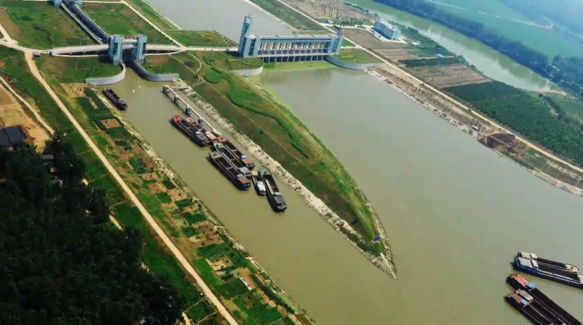

地理环境
位置境域
太和县位于安徽省西北部，阜阳市北部，东临亳州市涡阳县、利辛县，南抵阜阳市颍泉区，西接阜阳市界首市，北与亳州市谯城区为邻，西北与河南省周口市郸城县接壤。介于东经115°25′―115°55′，北纬33°04′―33°35′之间，东南经淮南市凤台县、淮南市区去合肥286千米，西北经淮阳区、西华县去郑州市307千米。东去津浦路至蚌埠市209千米，西去平汉路之漯河市210千米。南北长52千米、东西宽60千米，总面积1822平方千米。
地形地貌
太和县境处于淮北淤积平原之西北部，黄泛平原是地貌类型的主体，始于汉武帝元光三年（前132年）以来的黄河多次西泛滥淤积而成。
境内地势平坦，西北高（海拔36.05米），东南低（海拔30.5米），高差5.55米，自然坡降一万分之一到七千分之一。按地貌成因分类，可分为剥蚀堆积河间平原和最新泛滥带。削蚀堆积河间平原广泛分布在河间地区，由青黄杂色亚粘土构成，顶部有50厘米左右的黑色风化壳，地表平坦，地势由西北向东南缓倾。青黄杂色亚粘土明显地遭受剥蚀，沿裂隙呈棱块状脱落，剥蚀脱落的亚粘土碎块，重新在附近或移至别处堆积起来。
气候
太和县地处亚洲大陆东部，气候按中国自然区划分为东部季风暖温带半温润地区，又接近北亚热带气候，实质是两种气候的缓冲区。其特点是季风气候明显，四季分明，光照充足，气候温和，雨量适中，无霜期长。但因处在两种气候的缓冲区，天气往往变化无常，低温、连阴雨、旱、涝、冰雹、霜冻和大风等自然灾害时有出现，给农业生产造成不利影响。气温：年平均14.9℃。1月份最冷，平均0.7℃，7月份最热，平均27.9℃，年温差27.2℃。1959年至1985年极端最高气温40.8℃。极端最低气温为－21.3℃，最高和最低温差62.1℃。太和县1959年至1985年的气象记录最低气温低于－20℃的年份有5年，最高气温超过40℃的年份也有5年。